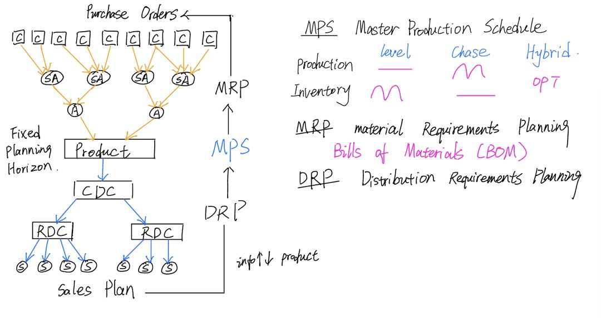
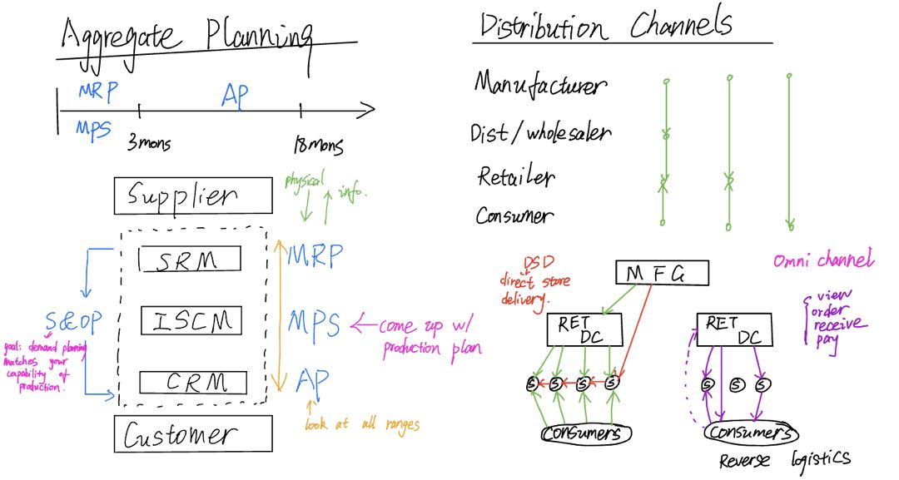

SC2X: Supply Chain Design
This course covers all aspects involved in the design of supply chains for companies and organizations anywhere in the world. The course is divided into four main topic areas: Physical flow design, Supply chain finance, Information flow design, and Organization/Process design.
In the design of physical flows, we show how to formulate and solve Transportation, Transshipment, Facility Location, and Network Design Problems. For financial flows we show how to translate supply chain concepts and actions into the language of the Chief Financial Officer (CFO) of a company. We cover Activity Based Costing, Working Capital, the Cash-to-Cash cycle and Discounted Cash Flow Analysis. The design of the information flow section describes how firms communicate with suppliers (procurement, risk contracts), internal resources (production planning, bills of materials, material requirements planning), and customers (Sales & Operations Planning and other collaboration based processes). In the last section, we introduce performance metric design and organizational design within the supply chain organizationfocusing mainly on the centralize/decentralize decision.
Pysical Network Design
1. The Transportation Problem & Transhipment Problem.
2. Advanced Topics in Supply Chain Network Design.
Production Planning
1. Production Planning and Fixed Planning Horizons.
2. Material and Distribution Requirements Planning.
S&OP and Distribution Strategies
1. Aggregate Planning and Sales & Operations Planning.
2. Distribution Channel Strategies.
Supplier Management
1. Procurement Strategy.
2. Optimization Based Procurement.